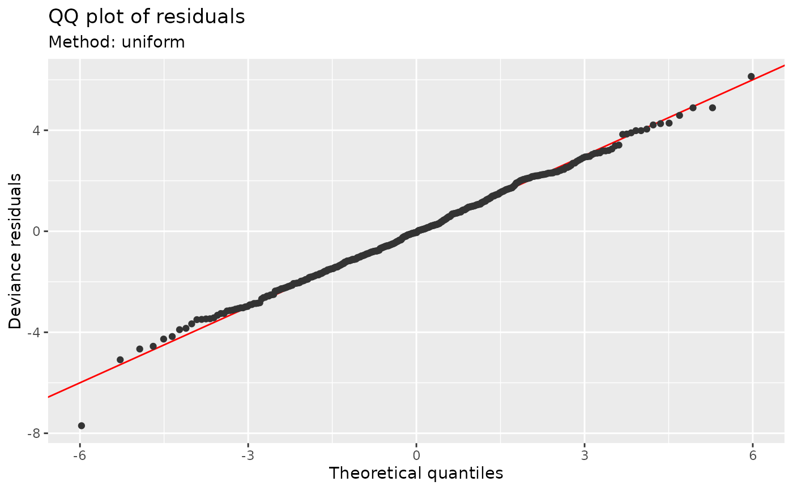
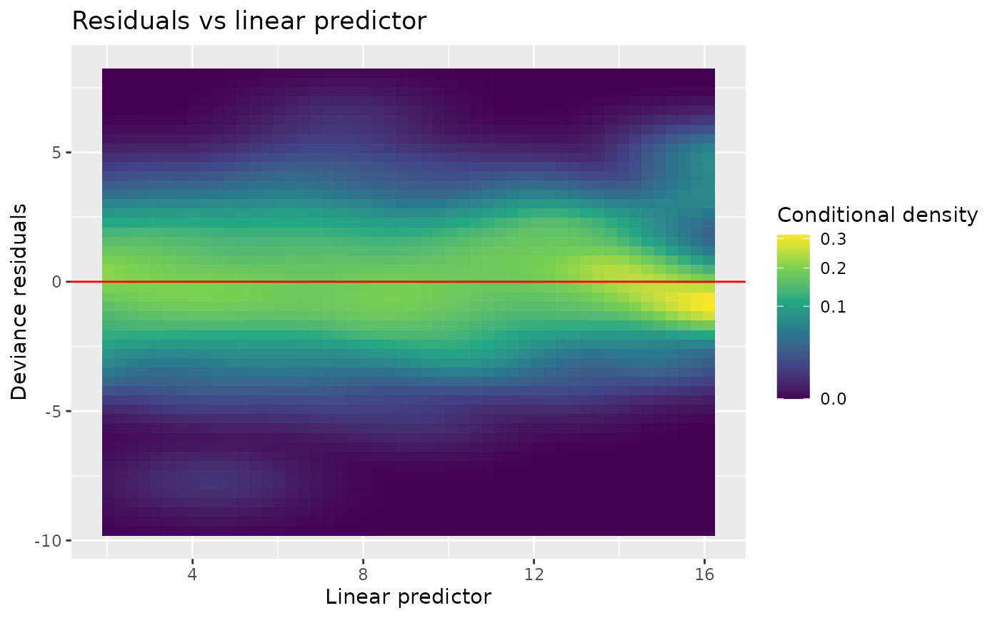
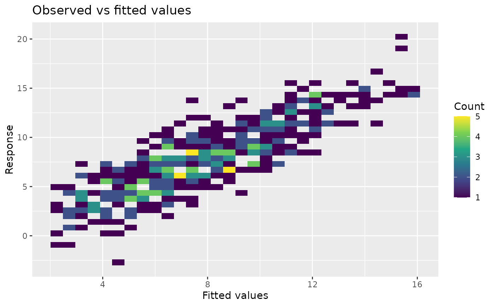
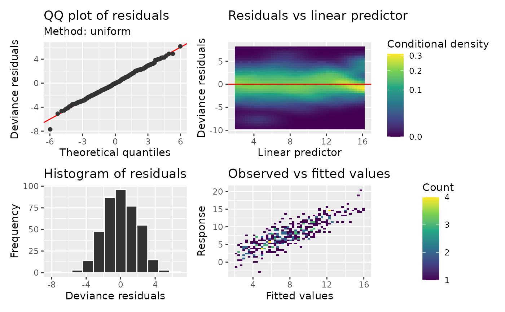

Aggregate all observations before drawing model diagnostic plots with ggplot. QQ points are grouped into bins of equal distance along the curve, keeping both endpoints. Heatmaps and histograms contain precomputed counts, so redrawing does not bin the original data again. Uniform references average draws as they are generated. Simulated references retain exact pooled quantiles, using temporary files above the configured memory threshold; see diagnostic_support.
Usage
scalable_qq_plot(
model,
method = NULL,
type = NULL,
n_uniform = 10,
n_simulate = 50,
seed = NULL,
level = 0.9,
qq_bins = 1000L,
xlab = NULL,
ylab = NULL,
title = NULL,
subtitle = NULL,
caption = NULL,
ci_col = "black",
ci_alpha = 0.2,
point_col = "grey20",
point_alpha = 1,
line_col = "red",
by_family = NULL,
conditioning = NULL,
...,
n_dharma = 250L
)
scalable_worm_plot(model, ..., n_dharma = 250L)
scalable_residuals_linpred_plot(
model,
type = NULL,
density_bins = c(50L, 50L),
density = c("conditional", "count"),
seed = NULL,
xlab = NULL,
ylab = NULL,
title = "Residuals vs linear predictor",
subtitle = NULL,
caption = NULL,
line_col = "red",
by_family = NULL,
rank = NULL,
density_method = c("kde", "histogram"),
bandwidth = NULL,
conditioning = NULL,
...,
n_dharma = 250L
)
scalable_observed_fitted_plot(
model,
density_bins = c(50L, 50L),
density = c("count", "conditional"),
xlab = "Fitted values",
ylab = "Response",
title = "Observed vs fitted values",
subtitle = NULL,
caption = NULL,
by_family = NULL,
conditioning = NULL,
...
)
scalable_residuals_hist_plot(
model,
type = NULL,
n_bins = c("sturges", "scott", "fd"),
seed = NULL,
xlab = NULL,
ylab = "Frequency",
title = "Histogram of residuals",
subtitle = NULL,
caption = NULL,
by_family = NULL,
conditioning = NULL,
...,
n_dharma = 250L
)Arguments
- model
A fitted model supported by diagnostic_support.
- method
character or
NULL; how to calculate reference quantiles. Probability integral transform (PIT) and quantile residuals use fixed uniform and standard-normal references, respectively. For quantile residuals,"normal"also selects that fixed reference; other named methods require traditional residuals. For deviance, response and Pearson residuals:"uniform"applies the fitted inverse cumulative distribution function (CDF) to randomised uniform quantiles and averages the resulting ordered residuals overn_uniformdraws."simulate"generatesn_simulateresponse data sets at the fitting covariates. Responses are generated together when needed to preserve dependence, and their ordered residuals supply reference values and bands."marginal"approximates the pooled distribution of individual residuals, without bands for dependence. This is selected for BAM GEE and PQL correlations that do not define a joint response distribution. Explicit joint simulation is unavailable in those cases."normal"uses a normal approximation fitted to the residual location and scale. For dependent responses it omits bands based on independence."direct"is deprecated in favour of"uniform".
For ordinary GAMs,
NULLselects"simulate"for Tweedie and"uniform"otherwise. Missing inverse CDFs cause a switch to simulation; missing response generators can cause a switch to a normal approximation for independent responses. Dependent responses use joint simulation when available, or marginal checks otherwise. For grouped families,NULLselects simulation if every component has a generator, or inverse-CDF sampling with a message if every component has an inverse CDF. If neither is available, it gives an error; a normal approximation must be requested explicitly.- type
Residual type;
NULLfollows the model-specific defaults inappraise(). PIT and quantile residuals are available for supported response distributions."surrogate"is available forocat()andmultinom()GAMs withmethod = NULL: logistic references for ordinal residuals and centred Gumbel references for each nominal category utility. Nominal components always have separate panels. Their residuals are drawn once per observation and shared with ordinary diagnostics. Components are summarised one at a time; QQ bin limits apply to each category. Residuals use category probabilities on the predictor axis, including category 0. Seesurrogate_residuals()and diagnostic_support.- n_uniform
numeric; number of inverse-CDF draws to average when
method = "uniform".- n_simulate
numeric; number of data sets to simulate from the estimated model when using the simulation method (
method = "simulate").- seed
Random seed for QQ calculations or randomized residuals. Explicit seeds preserve the caller's RNG state, including an absent state.
- level
Coverage of pointwise QQ reference intervals, strictly between zero and one. Used by simulation and normal-reference methods.
- qq_bins
Maximum number of QQ points per family component, including both endpoints; an integer of at least three.
- xlab, ylab
Axis labels;
NULLselects suitable defaults.- title, subtitle, caption
Plot title, subtitle and caption, passed to
ggplot2::labs().- ci_col
Deprecated; use
gratia_theme_get()theme settings instead. Fill colour for reference intervals, including bands for quantile residuals.- ci_alpha
Deprecated; use
gratia_theme_get()theme settings instead. Alpha transparency for reference intervals.- point_col
Deprecated; use
gratia_theme_get()theme settings instead. Constant point colour when family components are not mapped to colour. Pooled grouped diagnostics instead colour points by component.- point_alpha
Deprecated; use
gratia_theme_get()theme settings instead. Alpha transparency of points on the QQ plot.- line_col
Deprecated; use
gratia_theme_get()theme settings instead. Colour used to draw the reference line.- by_family
logical or
NULL; separate indexed grouped-family components into facets. The default pools quantile residuals with component colours and facets traditional residuals.TRUEandFALSEexplicitly select the layout. Inappraise(), observed-versus-fitted values always use component facets. Standaloneobserved_fitted_plot()facets by default and permits explicit pooling. Ignored for ordinary models.- conditioning
character or
NULL;"conditional"holds fitted random effects fixed,"marginal"averages over new effects, and"gam_component"uses the extracted GAM. Availability and defaults depend on the model; see diagnostic_support.- ...
optional arguments used to prepare the model for diagnostics, including sdmTMB
field_method. Forscalable_worm_plot(), other arguments pass toscalable_qq_plot()except its internal worm setting.- n_dharma
positive integer; number of response simulations for
type = "dharma". This is separate fromn_simulate, which controls traditional QQ reference calculations. Defaults to 250.- density_bins
Positive integer or pair of integers giving the number of horizontal and vertical heatmap bins.
- density
One of
"conditional"or"count". Conditional density is estimated usingdensity_method. With"histogram", it is the count divided by the horizontal-bin total and vertical-bin width. Empty horizontal bins are blank. Counts are always unsmoothed.- rank
logical or
NULL; use within-component ranks on the horizontal axis of residual-versus-predictor plots. The default ranks pooled grouped plots and retains original predictors in facets.TRUEorFALSEoverrides this independently of the residual type and layout. Only finite observations included in each component determine its ranks; average ties are used.- density_method
Conditional-density estimator:
"kde"(the default) usesKernSmooth::bkde2D()with Gaussian kernels;"histogram"uses unsmoothed rectangular bins. Only affects the residual heatmap.- bandwidth
Optional pair of positive bandwidths for the predictor and residual axes, in their plotted units.
NULLuses normal-reference bandwidths, adjusted for two dimensions, with a fallback for constant axes. Used only fordensity_method = "kde"and conditional density.- n_bins
character or numeric; either the number of bins or a string indicating how to calculate the number of bins.
Details
GJRM support covers uncensored univariate N, LN, GA, GAi, P, NBI, and NBII models. PIT/quantile references are uniform/normal; traditional response/Pearson references use inverse-CDF or simulated responses. Probabilities are recomputed from final likelihood parameters. Quantile QQ bands give pointwise intervals for ordered standard-normal residuals, conditional on the fitted distribution, without accounting for parameter estimation. Observed-versus-fitted plots use response means, including the lognormal mean correction. Residuals are plotted against the first distributional linear predictor.
Grouped-family models retain the residual defaults, component reference
distributions, predictor ranks and layout controls of appraise(). QQ
bin limits apply separately to each component. Pooled residual
heatmaps summarize the component mixture rather than colouring individual
observations; observed-versus-fitted appraisals always separate components.
Pooled histograms use faint component-coloured fills with opaque stepped
upper boundaries, retaining common bin edges and component densities.
Residual-versus-predictor plots identify the response family in the subtitle
and show conditioning and field choices in the caption where relevant,
matching residuals_linpred_plot(). Supply caption = "" to omit the caption.
Kernel density estimates are calculated on a fixed grid before plotting.
Each predictor slice is normalized to integrate to one over the displayed
residual grid. Bandwidths, rather than density_bins, control smoothing;
increase grid resolution when using small bandwidths. A square-root fill
transformation reveals low-density regions while retaining density units
in the legend. Gaussian kernels smooth the bands that discrete residuals
can form even under a correctly specified count model. Smoothing does not
give traditional residuals a common reference distribution.
Point styling affects QQ and worm points. Heatmap fill scales can be replaced with ggplot scales. Non-finite plotting observations are reported and omitted; fitting exclusions do not count as dropped observations.
References
Fasiolo, M., Nedellec, R., Goude, Y. and Wood, S. N. (2020). Scalable Visualization Methods for Modern Generalized Additive Models. Journal of Computational and Graphical Statistics, 29, 78-86. doi:10.1080/10618600.2019.1629942.
Examples
library("mgcv")
dat <- data_sim("eg1", n = 400, seed = 2)
m <- gam(y ~ s(x0) + s(x1) + s(x2) + s(x3), data = dat)
scalable_qq_plot(m, seed = 42)

scalable_residuals_linpred_plot(m)

scalable_observed_fitted_plot(m, density_bins = c(30, 40))

appraise(m, scalable = TRUE, seed = 42)
